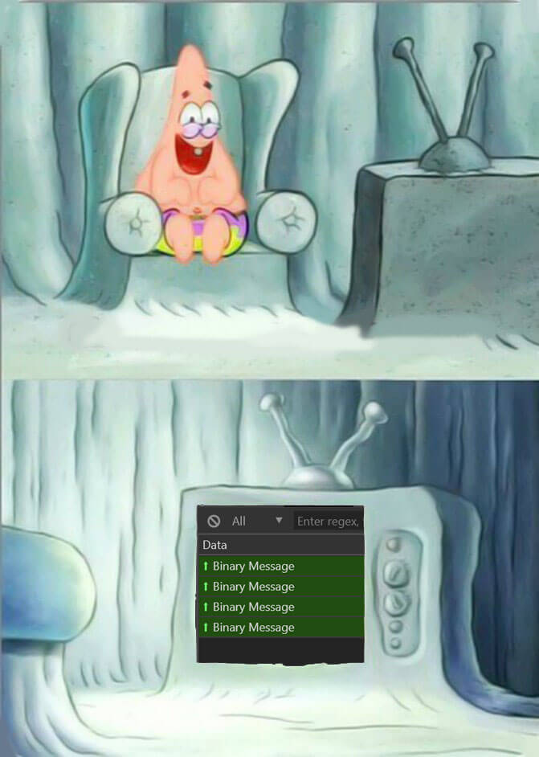

Я — Гасымов Али. JavaScript разработчик. Делаю расширения для браузеров и приложения на реакте
Telegram — @alik0211
Блог — gasymov.com/blog
ВКонтакте — vk.com/alik0211
TCP, Websocket, Websocket over HTTPS, HTTP, HTTPS
const subdomainsMap = {
1: 'pluto',
2: 'venus',
3: 'aurora',
4: 'vesta',
5: 'flora',
};
const name = subdomainsMap[2];
const url = `wss://${name}.web.telegram.org/apiws`;
const socket = new WebSocket(url, 'binary');
С помощью TL Language описываются все типы и методы. Сначала нам нужно научиться сериализовать базовые типы
const buffer = new ArrayBuffer(4);
const dataView = new DataView(buffer);
const byteView = new Uint8Array(buffer);
console.log(`byteView:`, byteView);
// Uint8Array(4) [0, 0, 0, 0]
// От 0 до 0xffffffff
// 0xffffffff === 4294967295
dataView.setUint32(0, 0xffffffff, true);
console.log(`byteView:`, byteView);
// Uint8Array(4) [255, 255, 255, 255]
dataView.getUint32(0, true); // 0xffffffff
const bigInt = require('big-integer');
const buffer = new ArrayBuffer(8);
const dataView = new DataView(buffer);
const byteView = new Uint8Array(buffer);
console.log(`byteView:`, byteView);
// Uint8Array(8) [0, 0, 0, 0, 0, 0, 0, 0]
const long1 = '18446744073709551615';
const {
quotient,
remainder
} = bigInt(long1).divmod(bigInt(0x100000000));
dataView.setUint32(0, remainder.toJSNumber(), true);
dataView.setUint32(4, quotient.toJSNumber(), true);
console.log(`byteView:`, byteView);
// Uint8Array(8) [255, 255, 255, 255, 255, 255, 255, 255]
const buffer = new ArrayBuffer(8);
const dataView = new DataView(buffer);
const byteView = new Uint8Array(buffer);
console.log(`byteView:`, byteView);
// Uint8Array(8) [0, 0, 0, 0, 0, 0, 0, 0]
const long2 = [0xffffffff, 0xffffffff];
dataView.setUint32(0, long2[1], true);
dataView.setUint32(4, long2[0], true);
console.log(`byteView:`, byteView);
// Uint8Array(8) [255, 255, 255, 255, 255, 255, 255, 255]
const byteView = new Uint8Array([
255, 255, 255, 255, 255, 255, 255, 255
]);
let offset = 0;
// 'hello' -> [104, 101, 108, 108, 111]
const bytes = new Uint8Array([104, 101, 108, 108, 111]);
if (bytes.length < 254) {
byteView[offset++] = bytes.length;
}
byteView.set(bytes, offset);
offset += bytes.length;
console.log(byteView);
// Uint8Array(8) [5, 104, 101, 108, 108, 111, 255, 255]
while (offset % 4 !== 0) {
byteView[offset++] = 0;
}
console.log(byteView);
// Uint8Array(8) [5, 104, 101, 108, 108, 111, 0, 0]
const string = 'hello';
const encoder = new TextEncoder();
const bytes = encoder.encode(string);
console.log(bytes);
// Uint8Array(5) [104, 101, 108, 108, 111]
| Тип | Способ сериализации |
|---|---|
| int32 | dataView.setInt32 |
| boolTrue | int32(0xbc799737) |
| boolFalse | int32(0x997275b5) |
| vector | int32(0x1cb5c415) + int32(vector_length) + vector_items |
boolFalse#bc799737 = Bool;
boolTrue#997275b5 = Bool;
codeSettings#debebe83
flags:#
allow_flashcall:flags.0?true
current_number:flags.1?true
allow_app_hash:flags.4?true
= CodeSettings;
---functions---
auth.sendCode#a677244f
phone_number:string
api_id:int
api_hash:string
settings:CodeSettings
= auth.SentCode;
{
"id": "-1502141361",
"method": "auth.sendCode",
"params": [
{ "name": "phone_number", "type": "string" },
{ "name": "api_id", "type": "int" },
{ "name": "api_hash", "type": "string" },
{ "name": "settings", "type": "CodeSettings" },
],
"type": "auth.SentCode",
}
Сервер просто не поймёт наше сообщение

const buffer = new ArrayBuffer(4);
const dataView = new DataView(buffer);
const byteView = new Uint8Array(buffer);
console.log(`byteView:`, byteView);
// Uint8Array(4) [0, 0, 0, 0]
// От 0 до 0xffffffff
// 0xffffffff === 4294967295
dataView.setUint32(0, 0xffffffff, true);
console.log(`byteView:`, byteView);
// Uint8Array(4) [255, 255, 255, 255]
dataView.getUint32(0, true); // 0xffffffff
С остальными типами работем аналогично. Но, у нас может быть gzip
const pako = require('pako');
if (this.uint32() === 812830625) {
const gzipBytes = this.bytes();
const uncompressed = pako.inflate(gzipBytes);
const deserializer = new TLDeserializer(
uncompressed.buffer
);
return deserializer.predicate();
}
Первый запрос к API должен быть обёрнут в invokeWithLayer
{
"id": "-627372787",
"method": "invokeWithLayer",
"params": [
{ "name": "layer", "type": "int" },
{ "name": "query", "type": "!X" }
],
"type": "X"
}
Связываем запрос и ответ через msg_id
const messagesWaitResponse = {};
function call() {
return new Promise((resolve, reject) => {
const messageId = '123456';
this.messagesWaitResponse[messageId] = {
resolve,
reject,
};
});
}
function handleMessage(message) {
// message.req_msg_id === '123456'
const messageId = message.req_msg_id;
this.messagesWaitResponse[messageId].resolve(message);
}
karmatic — это игрушка дьявола
Лучше просто использовать karma и jasmine
GitHub — github.com/alik0211/mtproto-core
const { MTProto } = require('@mtproto/core');
const api_id = 'YOU_API_ID';
const api_hash = 'YOU_API_HASH';
// 1. Create an instance
const mtproto = new MTProto({
api_id,
api_hash,
// Use test servers
test: true,
});
// 2. Get the user country code
mtproto.call('help.getNearestDc').then(result => {
console.log(`country:`, result.country);
});
30 апреля релиз версии 3.0.0
Важные ссылки: